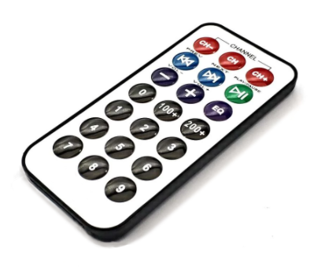

IR 리모트 조작
IR 리모콘을 통해서 턴데이블을 조작한다.

버턴 기능
CH-: Not USECH: Not USECH+: Not USE|<<: 왼쪽으로 연속 회전>>|: 오른쪽으로 연속 회전>||: 연속회전 정지－: 회전 속도 감속＋: 회전 속도 증가EQ: 번호키를 이용하여 회전값 입력 후 회전 실행－: 회전 속도 감속＋: 회전 속도 증가
회전 조작
- 번호키를 이용하여 원하는 회전각을 입력하고, EQ 키를 이용하여 회전을 수행한다.
- EQ 키를 다시 클릭하면, 이전 입력된 값으로 회전을 수행한다.